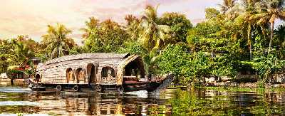

Alappuzha (or Alleppey) is a city on the Laccadive Sea in the southern Indian state of Kerala. It's best known for houseboat cruises along the rustic Kerala backwaters, a network of tranquil canals and lagoons. Alappuzha Beach is the site of the 19th-century Alappuzha Lighthouse. The city's Mullakkal Temple features a traditional design. Punnamada Lake's snake boat races are a well-known annual event.
The city is situated 28 km from Changanacherry, 46 km from Kottayam, 55 km from Kochi, 129.4 km from Thrissur and 155 km north of Trivandrum. A town with canals, backwaters, beaches, and lagoons, Alappuzha was described by Lord Curzon as the "Venice of the East." Hence, it is known as the "Venetian Capital" of Kerala. In Alappuzha, Malayalam is the most spoken language.

House Boat
Popularly known as the Venice of the east, Alleppey or Allapuzha is famous for its serene backwaters and their exceptionally scenic setting. Cruising on houseboats in Alleppey is the latest and probably the best addition to the list of ways you can enjoy the mesmerizing natural beauty of this quaint little town.
Alleppey Backwaters
Formed by the amalgamation of multiple of various waters sources, backwaters give you the postcard-perfect view with coconut trees lined all along and houseboats in the middle.
Vembanad Lake
Vembanad Lake is the longest lake in India. The lake is known by different names in different places. Taking a house boat on the lake could be a fun experience.